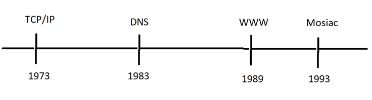

History of the Internet
History of the Internet: The internets foundations were laid in the 1960's with the creation of ARPA. This
initial network allowed research universities to share data and other resources across different devices within that network
This modal however was limited as these small networks could not share data to other small networks. This was solved by the
developer of TCP/IP which enabled these small, sepearated network to communicate with another and ultimatly create a global
network we now know as the internet.

- 1973: The development of the Transmission Control Protocol and the Internet Protocol
laid the foundation for todays internet architecture, known as TCP/IP.
- 1983: The intorduction of domain names and the Domain Name System revolutionized web addressing.
- 1989: Tim Berners-Lee's Proposal for the World Wide Web, outlining the concepts of URLs,HTTP, and HTML.
- 1993: The release of the graphical web browser Mosaic made the web more accessible for the public
Evolution of the Internet
The Dot-Com Boom was a period in the late 1990's, where internet-based buisenesses experienced a big growth. Companies like
Amazon,eBay, and Google emerged, forever changing how we shop, search for information, and stay up to date with current and new information.
Broadband and Mobile Revolution: The 2000's brought widespread adoption of broadbrand internet, enabling faster access to content.
With the evolution of smartphones and the intorduction of 4G, accessing the internet became even easier and lead to the era
of mobile internet. People were virtually always connected to the internet through their smartphones or other mobile devices.
In recent years, the internet has extended beyond computers and phones. Everyday objects, from smart thermostats to wearable
devices, are able to connect to the internet, creating a network of interconnected devices. This is referred to as Internet of Things.
Like the internet, the web also evolved and went through phases and different eras as technology advanced. The evolution of
the internet also played a vital role in the changes of the web.
- Web 1.0(WWW): Static websites, Low variety of content.
- Web2.0(Social Web): Social Web(Communities, participation), Rich Internet Application
- Web3.0(semantic Web): Artificial Intelligence, Personalization, Dynamic
Internet Protocols
Internet Protocols are essential for communication betweem devices. Protocols refer to established rules dictating the
arrangement of message strucures and procedural steps. These rules facilitates the exchange of information between devices
application programs. It is important for all communication devices to observe and adhere to these rules, to ensure that
the receiving host can accuratly interpret the transmitted message.
- TCP/IP: The fundamental protocol suite enabling data Transmission over networks.
- HTTPS/HTTP: Hypettext transfer protocol, the foundation of data communication on the WWW.
- DNS: Domain Name System, responsible for translating human-readable domain names into IP addresses
- SMTP: Simple Mail Transfer Protocol, used for sending emails.